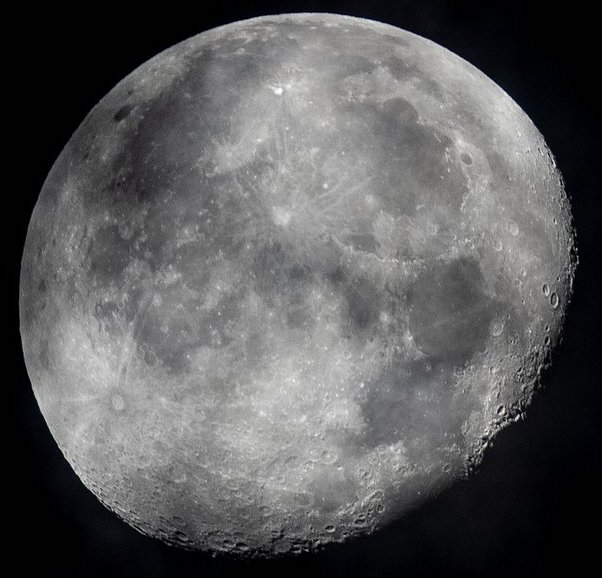

your sun is in...
cancer

"The Crab"

Characteristics of a Cancer:
* imaginative
* sympathetic
* persistent
* sensitive
* loyal
* loving
* rejuvenating
* imaginative
* sympathetic
* persistent
* sensitive
* loyal
* loving
* rejuvenating
Sun Signs
Just as the sun is the center point of our solar system, the sun signs represent the center aspects of a person. Your sun sign is one of twelve zodiacs that is based on the position of the Earth in relation to the sun on the day you were born. Because the sun has the strongest pull on the earth, sun signs influence people the most. Therefore, your sun sign can tell you the core characteristics of who you are and how you express yourself to the world.

Element - Water
Each sign is represented by one of four elements: Fire, Earth, Air, or Water. The elements represent a ruling quality that the three signs within this element all share.
Cancer Celebrities
Post Malone
Born: July 4th, 1995
Selena Gomez
Born: July 22nd, 1992

Tom Hanks
Born: July 9th, 1956
Ariana Grande
Born: June 26th, 1993
Kristen Bell
Born: July 18th, 1980
Meryl Streep
Born: June 22nd, 1949
Ruling Planet:

The Moon rules feeling, family, and reflection
The ruling planet of a sign determines many of its associated character traits. The moon rules over the soul and our emotions, making cancers often known as being highly intuitive and reactive to the emotions they are feeling. The moon's gravitational pull translates into the extreme degree that cancers are able to feel and understand themselves and those around them. Also, the moon's great role of reflecting the brightness of the sun provides cancers with their rejuvanating and loving qualities.
The Sign's Quality:
A sign's quality correlates strongly to their relation to the seasons. The cardinal signs all mark the start of the seasons; because of this, they are often referred to as reacting signs. Cancers exude an extreme understanding of their surroundings, and their ruling Moon combined with their water element and cardinal quality gives them a strong ability to feel and react accordingly. As their sign represents the start of summer, Cancers are considered very warm and caring, and this gives them many nurturing and maternal instincts.
Cardinal
cancer are falsely stereotyped as
oversensitive
when in reality they are self-protective and intuitive
listen to your daily horoscope on spotify